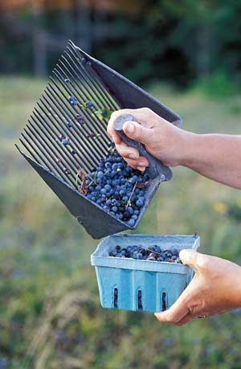

Blueberry Bonanza
Packed with fabulous flavor and nutrition, this delightful native fruit can be grown almost anywhere.
By Vicki Mattern
April/May 2007
Take a midsummer walk through most any state park in the country, and you’re bound to find blueberries or their first cousins tucked between pines and oaks or lining the sunny edges of marshes. Campers, hikers and weekend explorers alike covet the sweet blue treats for pancakes, cobblers and simply to savor them straight off the bush. Gardeners throughout most of the United States and southern Canada can grow these tasty berries right in their yards.
Of course you can buy them at the local supermarket, too - if you’re willing to pay up to $5 a pint. Many folks gladly do just that, not only for blueberries’ sweet flavor, but also for their incredible health benefits. Blueberries are loaded with antioxidants, compounds that researchers think protect against the harmful effects of aging. (See “Great News About Blues!” below for more.)
But why pay grocery store prices when you can have a blueberry bonanza right in your own back yard? These native American beauties are highly productive, wonderfully ornamental and relatively trouble-free once established. With proper preparation and a little patience, you’ll be rewarded with 10 to 25 pounds of delicious, nutritious “blues” per bush, each and every year.
Choose Your Blues
Cultivated for about the last 100 years, blueberries are available in dozens of garden varieties. For the longest harvest season, plant early, mid- and late-bearing varieties. Planting at least two different varieties also will encourage heavier crops.
Most varieties stem from three native species: highbush (Vaccinium corymbosum), rabbiteye (V. ashei) and low-bush (V. angustifolium). These three types, as well as several crosses between them, are loosely adapted to either cool or warm climates. If you live where the minimum winter temperature ranges between minus 10 and 10 degrees, you can probably grow any type!
Down-Home Blues
The best way to get a bountiful crop of delicious blueberries is to follow nature’s lead and give your plants a home like one they’d choose in the wild. Keep in mind that blueberries belong to the same family as azaleas, rhododendrons and heather: They all thrive in acidic soil that is rich in organic matter and moist but well-drained. And they’ll produce more fruit if planted in full sun, says Dan Finch, owner of Finch Blueberry Nursery in Bailey, N.C.
Probably the trickiest part of the blueberry’s requirements is providing that acidic soil. Actually, it’s not that blueberries need acidic soil, says Finch: “Blueberries need iron but are very poor at taking it up, so they’ve adapted to acid soil - like that often found in wooded areas - which makes the iron more available to the plants.” Highbush blueberries do best in 4.5 to 5.5 pH soil; rabbiteyes and Southern highbush varieties (crosses between highbush and various heat-tolerant Southern species) will tolerate a slightly higher pH of 5.5 to 6.0. Low-bush species prefer a range of 4.0 to 5.3. If a test shows your soil pH to be higher, you’ll need to lower it. Although some growers use elemental sulfur to reduce soil pH, you should wait at least three months after applying sulfur before planting. And sulfur will damage beneficial soil microorganisms, including the mycorrhizae that are essential for blueberry growth. Blueberries, which have shallow roots, form a symbiotic relationship with the mycorrhizal fungi in soil: The fungi help blueberries absorb soil nutrients in exchange for carbohydrates.
A better and faster option is to amend your soil with humusy material, such as composted leaf litter, which lowers soil pH, boosts organic matter and improves soil drainage - all critical for blueberries. “The humus has natural tannic acids that acidify the soil,” Finch says. Just avoid including manure or maple leaves, which raise pH. If you don’t have access to humusy material, you can work moist sphagnum peat moss into your planting holes.
For each blueberry bush, prepare an area 2 to 3 feet wide and 12 to 18 inches deep. Remove the soil and mix it with an equal amount of leaf compost or moistened peat moss. (Finch suggests using about a half bushel of compost or peat per plant, as a general rule.) Backfill the hole with the soil and compost or peat mixture to form a mound. Plant your blueberries in the raised mounds, keeping the shrubs at the same depth they were in their pots.
Plant highbush blueberries 4 to 5 feet apart and rabbiteyes 6 to 8 feet apart. If your plants are potted, gently tease apart the roots before planting. As soon as they are planted, water thoroughly to moisten the roots and close any air pockets in the soil.
Cool Climate Blueberries
Highbush. Growers in most of the East and Midwest, as well as those throughout most of the Pacific Northwest, have many excellent highbush varieties to choose from. Highbush blueberries grow 4 to 6 feet tall and bear the large, sweet berries commonly sold at the supermarket. For easy home growing and superior flavor, be sure to consider ‘Hannah’s Choice,’ ‘Elizabeth,’ ‘Blue Gold’ and ‘Little Giant,’ says Danny Hartmann, president of Hartmann’s Plant Co., a family-owned supplier of blueberries and other small fruits in Lacota, Mich.
‘Hannah’s Choice’ is the first to bear fruit, ripening medium to large, light berries with a subtle peach flavor, starting in late June in Michigan. The heirloom variety ‘Elizabeth’ - named for renowned blueberry researcher Elizabeth White - ripens in mid-season and produces large berries with fabulous, sweet flavor. Late-maturing ‘Blue Gold’ produces an abundance of tasty berries that hold their good quality for up to four weeks in the refrigerator. The plants are highly ornamental, too; in the fall, the glossy green leaves turn a lovely gold.
Save room for midseason-maturing ‘Little Giant,’ too. “It’s one of my favorites,” Hartmann says. “I love the flavor. The pea-size fruits are just outstanding, especially when chilled or frozen. I eat them straight from the freezer. And, research has shown that they rank among the highest varieties for antioxidants.” Growing to just 4 feet tall, the bushes are extremely productive (15 pounds per bush), easy to pick and adaptable to most soil types.
In the Pacific Northwest, ‘Bluecrop’ also can be counted on for reliable, midseason crops of large, flavorful berries, says Lynn Thompson, co-owner (with her husband Kevin) of Blueberry Meadows in Corvallis, Ore. “It’s versatile - good for fresh eating or baking - and easy to grow,” she says. “We sell our berries directly to the public, so flavor is key for us. When choosing varieties, home gardeners should read descriptions carefully. Varieties that say ‘suitable for U-Pick’ often are more flavorful than ones developed for commercial operations.”
Half-high. If you garden in a very cold climate (where winter temperatures drop as low as minus 40 degrees), choose “half-high” blueberries. Cold-hardy half-high blueberries result from crossing highbush blueberries with low-bush blueberries, which grow wild from Maine to Minnesota. Depending on the variety, half-high plants top out at just 20 to 40 inches tall, allowing snow to act as an insulator against winter cold. The smaller root system of half-high varieties also makes them ideal for growing in small landscapes or patio pots.
‘Northblue,’ the oldest half-high, remains popular for its big crops of nickel-size berries with superior flavor. The handsome plants turn crimson red in fall. For cross pollination and improved production, grow ‘Northblue’ with ‘Polaris,’ also known for its great flavor, Hartmann says.
Low-bush (or Ground Cover). Gardeners in all but the hottest regions (where minimum winter temperatures stay above 10 degrees) should consider this diminutive, nearly wild blueberry for an “edible landscape” ground cover or edging plant. The spreading plants grow just 18 inches tall and bear small but delicious fruit. Foliage turns blazing red in fall. Hartmann recommends ‘Ruby Carpet’ and ‘Little Crisp’ blueberries for ground cover.
Warm Climate Blueberries
Rabbiteye. This native Southern species gets its name from the berries’ pink color just before ripening. Adapted to areas where winter lows range from 30 degrees to minus 10 degrees, the vigorous plants can grow to 20 feet tall if not pruned back, and are more heat- and drought-tolerant than highbush plants. Although wild rabbiteye blueberries have slightly thicker skin and larger seeds than highbush blueberries, good modern varieties have been developed with thinner skin and smaller seeds.
“Of the many outstanding rabbiteye varieties, my favorite is ‘Premier,’” Finch says. “The plants are hardy and productive, and the berries are big and tasty. Here in eastern North Carolina, it begins ripening in mid-June.” Rabbiteyes require cross-pollination, so be sure to plant at least two varieties. For instance, ‘Premier’ crosses well with ‘Brightwell.’
Southern Highbush. To extend the growing range of the popular highbush blueberries into the South - including the hottest areas of Florida - breeders crossed the highbush species with heat-tolerant Southern species. These blueberries require far less winter chilling (a moist chilling period required for plants to break dormancy) than standard highbush varieties.
Compared to rabbiteyes, Southern highbush varieties bear earlier in the season, so “by planting both Southern highbush and rabbiteye varieties, gardeners can stretch their blueberry season from early May into September,” Finch says. For home gardeners and beginning market growers, Finch suggests ‘O’Neal’ and ‘Sharpblue’ - both early-bearing varieties with big, delicious berries and ornamental plants. “But they’re all good, really,” adds Finch. “The real secret to getting good blueberries is making sure the growing conditions are right.”
Growin’ Strong
To provide the moist soil blueberries crave, see that your growing plants receive at least 1 inch of water a week. Blueberries have shallow root systems, and lack the tiny root hairs that most other plants have. If they don’t receive adequate water, health and productivity will suffer.
To help ensure adequate soil moisture, blanket your blueberries with a cozy, 2- to 3-inch layer of organic mulch, such as composted leaves, pine needles or aged conifer (softwood) bark.
“If you happen to have a wooded area on your property, take a rake and gather some of the leaf litter to use as mulch,” Finch says. “It will contain the beneficial mycorrhizae fungi that blueberries need.” Avoid using hardwood chip mulches - the decomposing hardwood may draw nitrogen away from the blueberries.
“I use large pine bark chips - one 2-cubic-foot bag per mature rabbiteye plant per year,” says Cliff Muller, owner of Berry Sweet Orchards, an organic U-Pick blueberry operation in Ethel, La. “The mulch helps conserve moisture and insulates the roots from heat and cold.”
Blueberries aren’t heavy feeders. The decaying mulch will provide most of the necessary nutrients. If you do fertilize, use a slow-release organic fertilizer, such as fish fertilizer or cottonseed meal (not manure), or an organic fertilizer recommended for azaleas. Seaweed sprays, applied several times per season, can provide micronutrients to promote strong growth. To encourage large, quality fruit, prune blueberries annually when the shrubs are dormant. Cut out branches that are crossing or low-growing, as well as older center branches.
A Bounty of Blueberries
Regardless of what blueberry variety you choose to grow, you probably won’t have to worry much about insect pests or diseases, which rarely trouble small-scale growers. If aphids occasionally show up, simply douse them with insecticidal soap. A more likely competitor for your blue bounty will be birds. Robins and starlings love blueberries! U-Pick blueberry growers say having people in their orchards every day is enough to deter the birds, but home gardeners will need to secure their harvest by covering the shrubs entirely with garden netting as soon as the berries begin to “color up.” Once blueberries color up, the fruit will continue to ripen and sweeten for up to a week on the bush. (Blueberries will not ripen after you pick them.)
OK, here’s the tough part: during your blueberries’ first year, you really should remove all flower buds. Think of it as part of your long-term commitment - you’ll be rewarded many times over in the form of strong, healthy plants and big, delicious future harvests. In year two, go ahead and harvest if your plants are strong and healthy. Then, in year three, get your baskets ready because you’ll be picking all the blues you can use and savoring that fabulous, sweet flavor that everyone else pays top dollar for.
Great News About Blues!
By now, you’ve surely heard about some of the many health benefits of blueberries - all the more reason to plant your own blueberries this spring. Here are just a few of their virtues:
- Blueberries are among the top sources of antioxidants, which can slow the aging process and reduce the cell damage that can lead to cancer.
- Recent studies suggest that blueberries may actually reverse memory decline.
- Blueberries are a rich source of anthocyanins; studies suggest anthocyanins may help ward off heart attacks and slow macular degeneration.
- Blueberries are an excellent source of vitamin C.
- Containing just 40 calories per half-cup serving, sweet blueberries are an ideal low-calorie, great-tasting snack.
Blueberry Bounty
Fresh blueberries need little or no adornment, but at the height of blueberry season, you’ll have plenty of surplus berries for pancakes, cobblers, pies, muffins and fresh juice. Blueberries are also a breeze to freeze: Simply toss them dry into freezer bags or boxes, and rinse before using.
True Blue Pancakes
In this recipe from Rosalind Creasy, these delicious, hearty pancakes get their lovely blue-green hue from the blue cornmeal and, of course, the blueberries.
3/4 cup all-purpose flour, sifted
2 1/2 tsp baking powder
1 tbsp sugar
1 1/4 cups blue cornmeal
3/4 tsp salt
1 egg
1 cup milk
2 tbsp vegetable oil
1 cup fresh blueberries
Garnish: more fresh blueberries
Combine flour, baking powder, sugar, cornmeal and salt, blending with a spoon. In another bowl, mix egg, milk and oil with a spoon. Pour wet ingredients over dry ingredients and stir lightly, until the batter is just moist. Fold in blueberries.
Heat lightly greased frying pan or griddle to medium heat. Cook 2 or 3 pancakes at a time, until both sides are golden brown and insides are firm. If necessary, you can keep pancakes warm in a low oven until all are finished. Stack and serve with maple syrup and more fresh blueberries. Yields 8 to 10 medium (3-inch) pancakes.
Busy Day Cobbler
Jane Rogers, owner of Rogers Blueberries, a pick-your-own business in Cameron, N.C., shares a recipe her customers love.
1 stick butter
1 cup sugar
1 cup self-rising flour
1 cup milk
4 cups blueberries
Melt butter in 9-by-13-inch baking dish. Mix sugar, flour and milk together. Pour mixture over melted butter. Pour blueberries over the batter. Bake at 350 degrees for 20 to 30 minutes. Serves 6 to 8.
Blueberry Suppliers
These suppliers have a wide selection of blueberries suited to cool and warm climates.
Edible Landscaping
361 Spirit Ridge Lane
Afton, VA 22920
(800) 524-4156
Finch Blueberry Nursery
P.O. Box 699
Bailey, NC 27807
(800) 245-4662
Hartmann’s Plant Company
P.O. Box 100
Lacota, MI 49063
(269) 253-4281
Raintree Nursery
391 Butts Road
Morton, WA 98356
(360) 496-6400
Veteran garden writer Vicki Mattern grows food and flowers at her home in eastern Pennsylvania. She’s still searching for the right site for the pick-your-own blueberry farm she plans to establish.
|
MATTHEW T. STALLBAUMER Blueberries are loaded with nutritious compounds, such as antioxidants, anthocyanins and vitamin C. |
ROSALIND CREASY The roots of this highbush blueberry plant are protected by a living mulch of sweet woodruff. |
ROSALIND CREASY Low-bush blueberries are a great choice for gorgeous, edible landscaping. |
|
DWIGHT KUHN Picking low-bush (ground cover) blueberries is easier when you relax while you’re at it. |
 JANIS CHRISTIE/GETTY IMAGES
|
ROSALIND CREASY True Blue Blueberry Pancakes |
|
 LYNN KARLIN A blueberry rake makes easy work of harvesting tiny wild blueberries. |
ROSALIND CREASY The beautiful blossoms of ‘Sunshine Blue’ blueberries. |
MATTHEW T. STALLBAUMER Blueberries are among the top sources of antioxidants, which can slow the aging process and reduce the cell damage that can lead to cancer. |